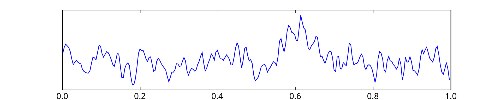
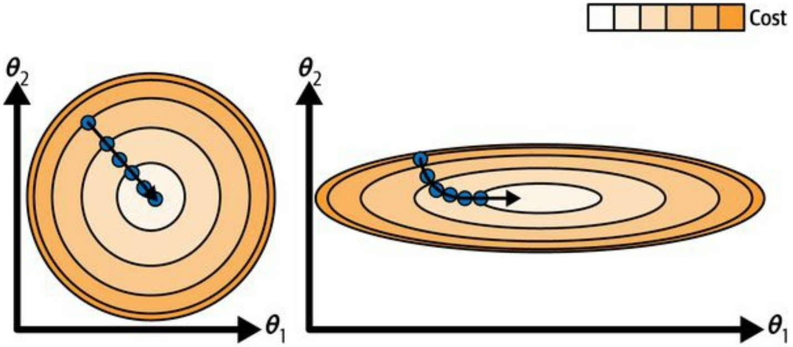
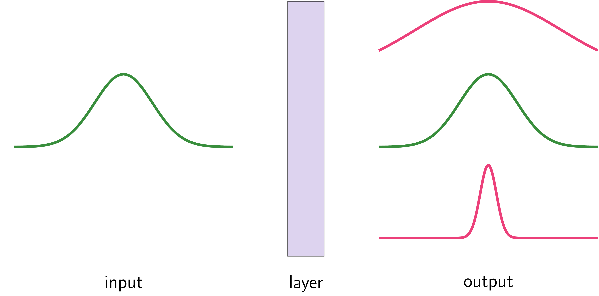
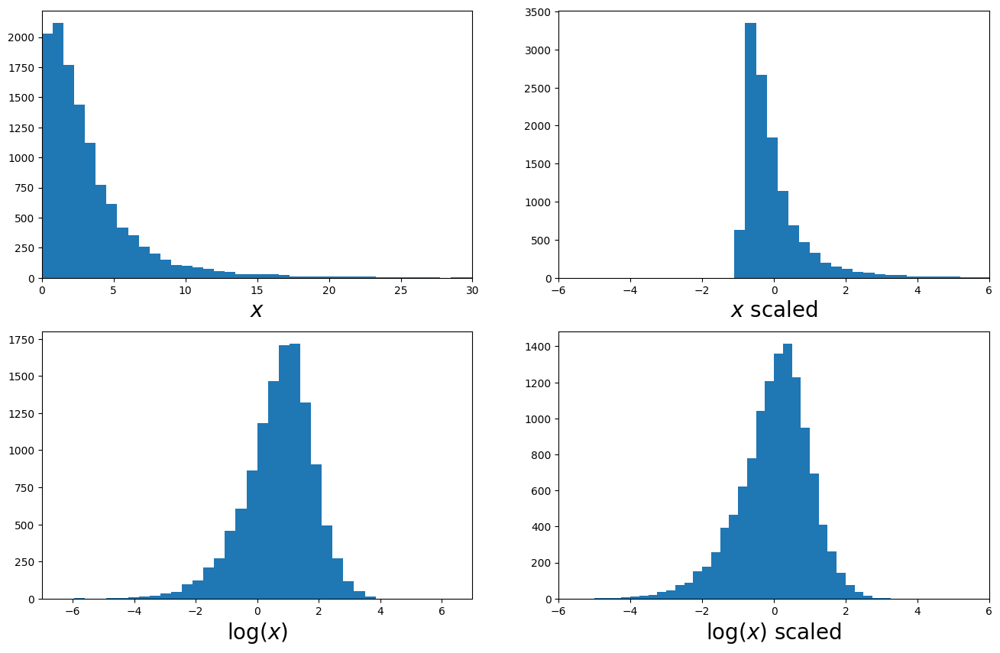
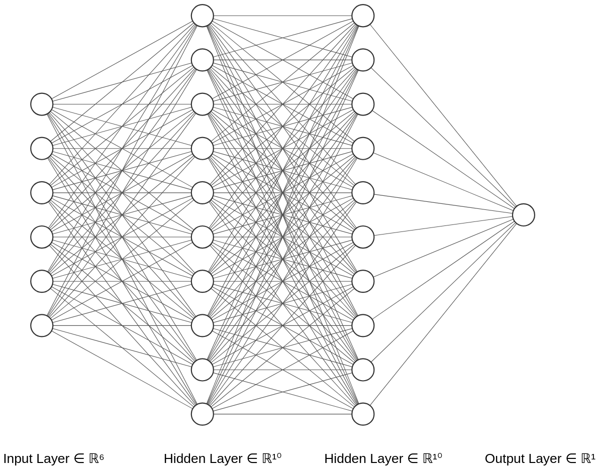
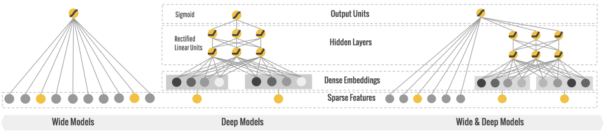
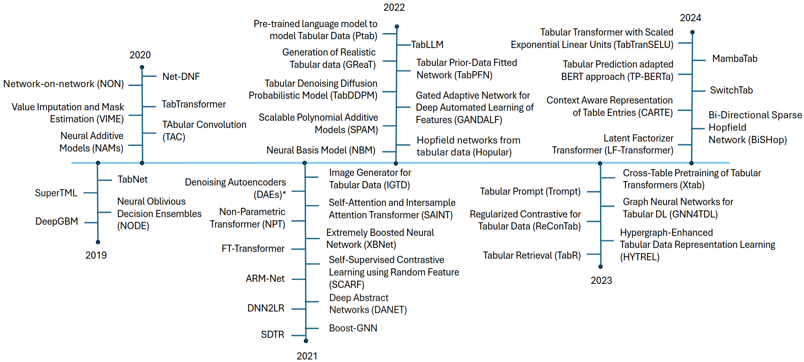
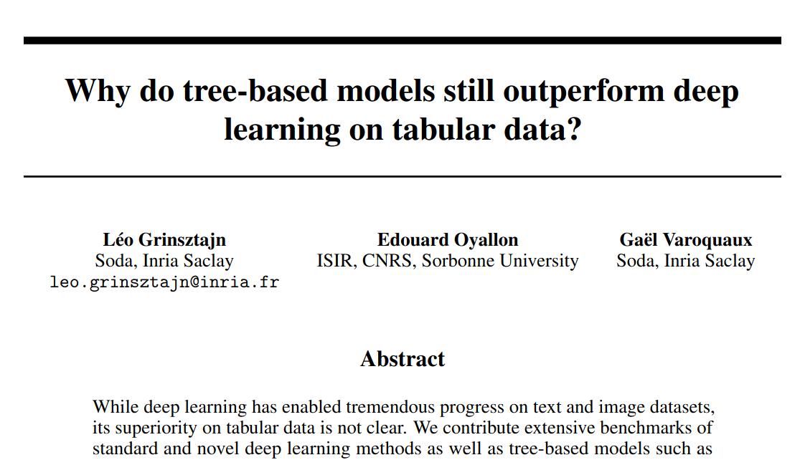
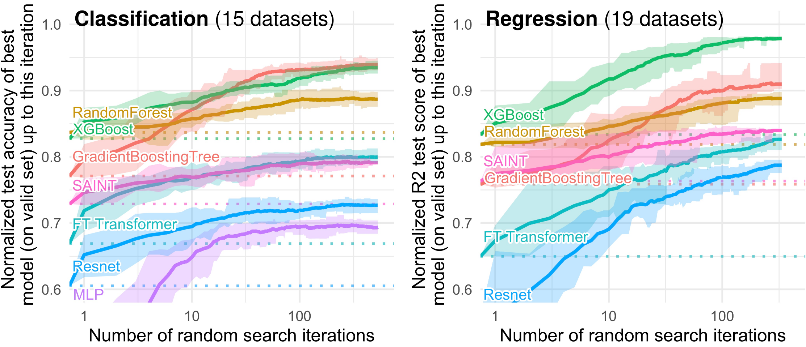

DAT255: Deep learning engineering
Lecture 11 – Tabular data
This week
Today:
- Deep learning on tabular data
- Data preprocessing with Keras
- Feature scaling
- Converting text and categorical values
- Quick look at embeddings
Thursday:
- Custom Keras objects
- Some ML experiment monitoring tools
Tabular data
Data that makes sense to put in a table:
patient_id |
age |
visits |
blood_type |
diag_code |
symptoms |
|---|---|---|---|---|---|
| 321 | 28 | 1 | “A” | none | “headache, fatigue” |
| 602 | 64 | 4 | “AB” | 32, 12 | “complains about headache, joint pains” |
| 201 | 62 | 2 | “0” | 12 | “dizzyness, headache” |
| 491 | 57 | 1 | “A” | 6 | “headache, fever” |
Compare to e.g. images and time series:


Feature normalisation
Consider optimisation where
- Features have similar scale
- Features have different scale

Feature normalisation
Consider optimisation where
- Features have similar scale
- Features have different scale
Remember also relation between input and output variances:

Feature normalisation
Normalisation:
Make features look like a normal distribution with mean = 0 and variance = 1
Usual approach:
Provided by
sklearn.preprocessing.StandardScaler()keras.layers.Normalization()
Feature transformations

Dealing with text and categorical data
patient_id |
age |
visits |
blood_type |
diag_code |
symptoms |
|---|---|---|---|---|---|
| 321 | 28 | 1 | “A” | none | “headache, fatigue” |
| 602 | 64 | 4 | “AB” | 32, 12 | “complains about headache, joint pains” |
| 201 | 62 | 2 | “0” | 12 | “dizzyness, headache” |
| 491 | 57 | 1 | “A” | 6 | “headache, fever” |
Encoding categorical data, like blood_type:
Dealing with text and categorical data
patient_id |
age |
visits |
blood_type |
diag_code |
symptoms |
|---|---|---|---|---|---|
| 321 | 28 | 1 | “A” | none | “headache, fatigue” |
| 602 | 64 | 4 | “AB” | 32, 12 | “complains about headache, joint pains” |
| 201 | 62 | 2 | “0” | 12 | “dizzyness, headache” |
| 491 | 57 | 1 | “A” | 6 | “headache, fever” |
Encoding categorical data with vector entries, like diag_code:
Dealing with text data
Sophisticated text processing will be the topic for next week
For “simple” text we can extend the one-hot encoding scheme and to feature hashing:
patient_id |
… | symptoms |
|---|---|---|
| 321 | “headache, fatigue” | |
| 602 | “complains about headache, joint pains” | |
| 201 | “dizzyness, headache” | |
| 491 | “headache, fever” |
| headache | fatigue | complains | about | joint | pains | dizzyness | fever |
|---|---|---|---|---|---|---|---|
| 1 | 1 | 0 | 0 | 0 | 0 | 0 | 0 |
| 1 | 0 | 1 | 1 | 1 | 1 | 0 | 0 |
| 1 | 0 | 0 | 0 | 0 | 0 | 1 | 0 |
| 1 | 0 | 0 | 0 | 0 | 0 | 0 | 1 |
Keras convenience layers for categorical data
Encoding integers, when knowing how many categories exist: CategoryEncoding
Encoding data that can be vectors of integers:
Keras convenience layers for categorical data
Encoding (single) strings: StringLookup
(For sentences we will use TextVectorization next week)
Can either provide the list of known strings (aka the vocabulary), of learn it from data:
Out-Of-Vocabulary (OOV) gets mapped to [UNK], meaning unknown
Keras convenience layers for categorical data
Can also use the same approach for integers, when we don’t know how many categories exist: IntegerLookup
Out-Of-Vocabulary (OOV) numbers get mapped to -1
Can also have multiple OOV tokens. Check the documentation
Keras convenience layers for categorical data
Often your dataset will contain a mix of diffent types, requiring different preprocessing.
A do-it-all solution is to use keras.utils.FeatureSpace. From example in docs:
feature_space = FeatureSpace(
features={
# Categorical features encoded as integers
"fbs": "integer_categorical",
"restecg": "integer_categorical",
# Categorical feature encoded as string
"thal": "string_categorical",
# Numerical features to discretize
"age": "float_discretized",
# Numerical features to normalize
"trestbps": "float_normalized",
"chol": "float_normalized",
"thalach": "float_normalized",
},
# Our utility will one-hot encode all categorical
# features and concat all features into a single
# vector (one vector per sample).
output_mode="concat",
)
# Adapt to training data
feature_space.adapt(train_ds)Embeddings
Problem:
If one-hot encoding many categorical features, each with many categories,
we get very many new feature columns
-> Our data becomes a sparse matrix, meaning most of the elements are zero.
Is there a more efficient way to encode our data?
Enter embeddings:
Let’s create a lookup table that maps categorical entries to numerical vectors
Embeddings
Now the magic✨ is:
The embeddings are learnt from data
We can treat the embedding space as an Euclidian space where elements close to another are similar or somehow related.
Network architectures for tabular data
Most common:
Straight-up Dense network
Benefits from:
- Feature engineering
- Ensembling

Typically the data rows and columns have no specific ordering or neighbouring relation
-> convolutions or recurrence make little sense.
Network architectures for tabular data
A variation: Wide and deep network

Network architectures for tabular data
Modern models are often based on the Transformer architecture

Network architectures for tabular data
A transformer model for tabular data: TabTransformer

TabTransformer significantly outperforms MLP and recent deep networks for tabular data while matching the performance of tree-based ensemble models (GBDT).
The best model for tabular data

